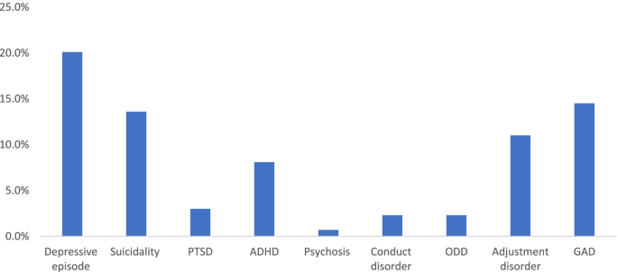

Common Mental Health Challenges
In Botswana, mental health issues such as depression, anxiety, and stress-related conditions are increasing due to urbanization, youth unemployment, and changing cultural expectations. These challenges affect both rural and urban populations, especially the youth and elderly.
Escalation of Untreated Conditions
If left untreated, mental health issues can escalate into chronic depression, substance abuse, and in severe cases, suicide. It's important to seek help early to prevent these outcomes.
Local Remedies and Support Systems
- Herbal Remedies: Moringa, Lemongrass, and traditional teas are used for calming and healing.
- Community Support: Elders and local healers often play an important role in emotional support.
- Cultural Practices: Talking circles and family gatherings are used to discuss and resolve mental stress.
Steps to Get Help in Botswana
- Visit local clinics or hospitals for professional mental health assessments.
- Contact support services such as Botswana Substance Abuse Support Line: +267 391 3399.
- Engage in community wellness programs and school counseling where available.
Statistics on Mental Health
A 2023 report by the Botswana Ministry of Health shows that nearly 25% of youth in urban areas experience high levels of anxiety due to unemployment and education stress.
Voices from the Community
"I used to feel overwhelmed every day. But when I joined a village support group, I found people who understood me." - Kgosi Thato, Mochudi
"The clinic nurse helped me understand that it’s okay to talk about how I feel." - Lebo, Gaborone